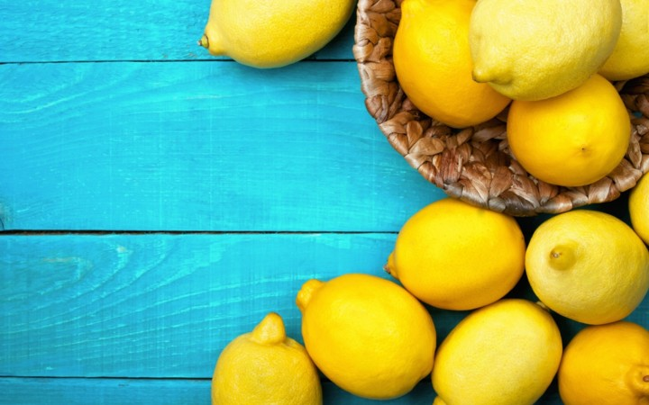

Beneficiile lămâii pentru organism
Proprietăți de lămâie Locul de nastere al lamaiei este considerat a fi India, iar in Italia a aparut in secolul II d.Hr. În 1493, când Columb a plecat din Europa în America, a luat semințe de lămâie cu el, în timp ce alți cercetători și misionari au adus semințe de lămâie în Haiti, Florida și California, unde crește astăzi. Mulți ani mai târziu, în 1747, medicul scoțian James Lind a emis ipoteza că scorbutul poate fi tratat cu citrice, așa că toate navele engleze au început să ia lămâi și var pentru a preveni această boală în rândul marinarilor. Puteți prepara o băutură naturală din lămâie: amestecați 2 linguri de oțet, 1 linguriță de suc de lămâie și 1 cană de apă. Lămâia este un produs necesar în bucătăria unui iubitor de sucuri. O cantitate mică de suc de lămâie face ca orice băutură vegetală să fie mai gustoasă. Lămâile curăță perfect corpul, în special ficatul și rinichii. Smoothie cu suc sau lamaie? Suc: folosiți întotdeauna lămâi care nu sunt acoperite cu ceară și, dacă nu există lămâi fără ceară, îndepărtați coaja (lăsând partea albă între coajă și pulpă). Beneficiile lămâii Lămâia este o sursă excelentă de vitamina C, de aceea ajută la protejarea sistemului imunitar și previne formarea radicalilor liberi, ceea ce duce la dezvoltarea cancerului. Vitamina C joacă un rol important în formarea colagenului, motiv pentru care este foarte benefic pentru piele. Lămâia este cunoscută pentru a ajuta la răceli, gripă și infecții ale gâtului. Vitamina C favorizează, de asemenea, formarea de bilă, care poate ajuta la scăderea colesterolului. În plus, încetinește procesul de îmbătrânire, previne artrita și dezvoltarea de alergii. Datorită conținutului ridicat de potasiu, lamaia ajută la stabilizarea tensiunii arteriale și hrănește creierul și celulele nervoase. Potasiul joacă un rol important în creșterea organismului, în dezvoltarea acestuia și în producerea de energie. Alimentele bogate în potasiu ajută la menținerea calciului în oase, ceea ce este foarte important în prevenirea osteoporozei. Lamaia curăță intestinele, neutralizează toxinele și distruge bacteriile dăunătoare. Sfat: începe ziua cu o felie de lămâie în apă caldă sau fierbinte - această băutură curăță instantaneu și hidratează organismul.
Buy now!